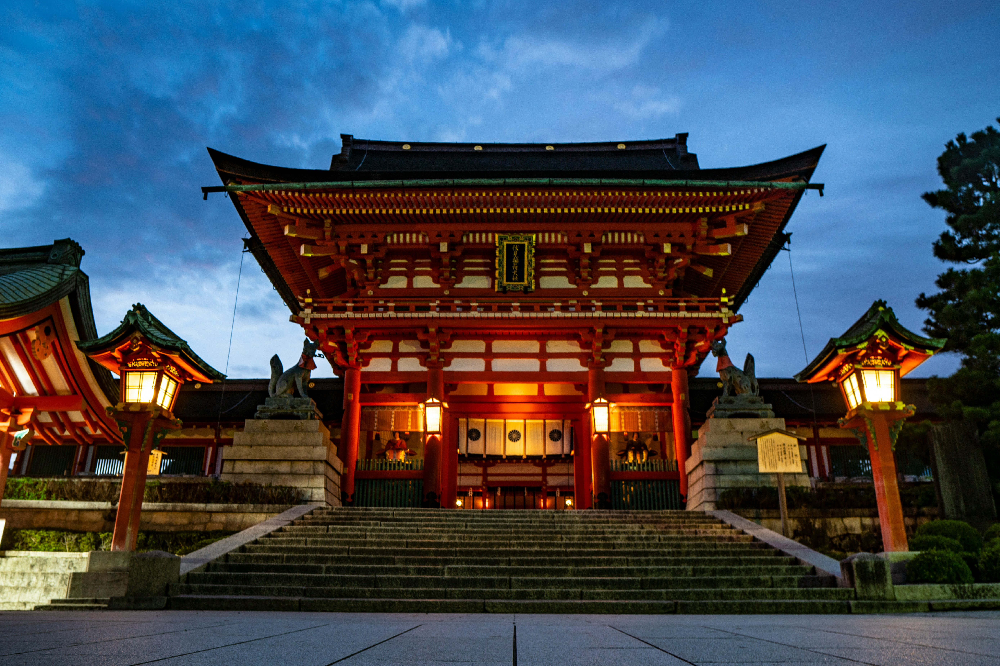
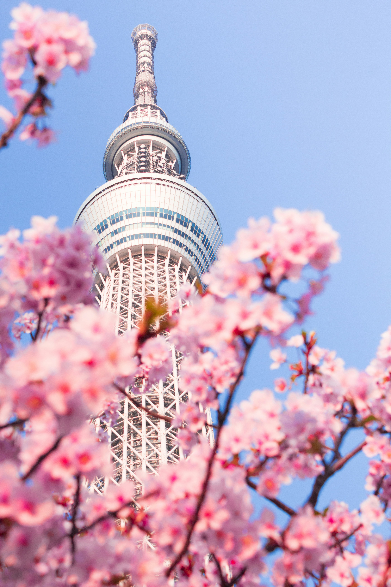

Japan is home to incredible landmarks, beautiful scenery, and historic destinations. Explore some of the country's most popular attractions.
Mount Fuji is Japan's tallest mountain, standing at 3,776 meters. It is one of Japan's most famous landmarks and a popular destination for sightseeing and hiking.

Fushimi Inari Shrine is located in Kyoto, Japan. It is famous for its thousands of bright red torii gates that form walking paths through the mountains.

Tokyo Skytree is a 634-meter-tall broadcasting and observation tower located in Tokyo, Japan. Visitors can enjoy breathtaking views of the city from its observation decks.
